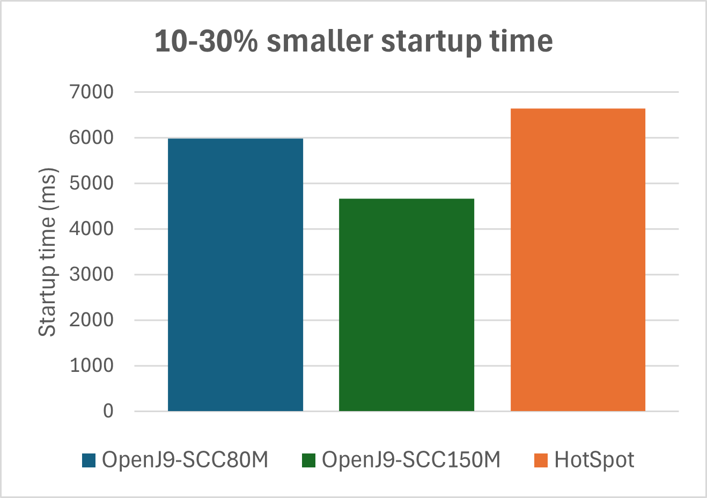
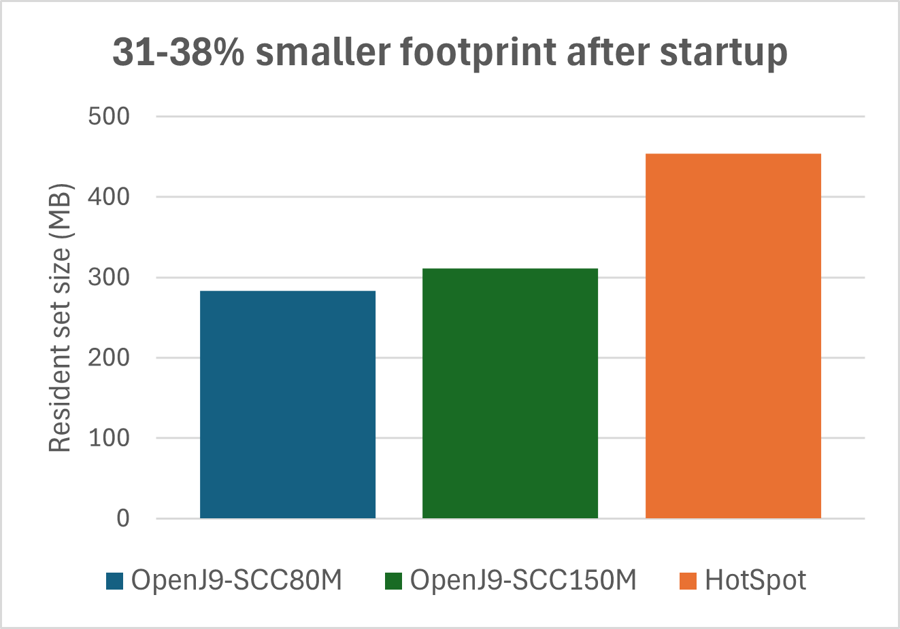

OpenJDK 17 performance with Eclipse OpenJ9
Table of Contents
- Introduction
- Metrics and configurations
- Startup time
- Memory footprint after startup
- Ramp-up time and peak throughput
- Memory footprint during application ramp-up
- Conclusion
- Benchmark testing details
Introduction
Our benchmark results suggest that running an application on Eclipse OpenJ9™ instead of HotSpot delivers reductions in footprint and startup time without sacrificing throughput.
To evaluate the performance characteristics of OpenJ9, we used the DayTrader8 J2EE application running on top of Open Liberty framework version 25.0.0.9. The experiments produced the following results:
- 10%-30% faster startup time
- 31%-38% smaller startup footprint
- 48% smaller footprint during application ramp-up
- Comparable throughput
Metrics and configurations
Because performance means different things to different people, we decided to look at multiple metrics:
-
Startup time: Startup time is measured from the moment the VM process is started until the moment Open Liberty prints "ready to run a smarter planet".
-
Memory footprint after startup: Physical memory consumption is measured immediately after startup with the following command:
ps -orss --no-headers -–pid JvmPid
- Footprint during load: We record the physical memory that is used by the VM as load is applied to the benchmark. Memory is measured by using the same command:
ps -orss --no-headers -–pid JvmPid
-
Ramp-up time: As load is applied to the application and the VM compiles more methods into native code, throughput improves gradually. Ramp-up time represents the time needed for throughput to reach its peak.
-
Peak throughput: Peak throughput is defined as the number of transactions that are processed per second after the VM has fully 'warmed-up'.
In all our experiments, we set the maximum heap size to 512 MB by using -Xmx512m, while leaving the initial heap size unspecified.
By default, Open Liberty enables the OpenJ9 shared class cache (SCC) and dynamic Ahead-of-Time (AOT) compilation. These technologies can significantly improve startup and ramp-up of Java applications with minimal effect on throughput.
The default SCC size that is used by Open Liberty is 80 MB, which we use throughout this document unless otherwise specified. However, because DayTrader8 is a relatively large application, some experiments also evaluate a configuration with a 150 MB SCC (-Xscmx150m) to demonstrate the impact of cache size on performance.
Startup time
Thanks to the SCC and AOT compilation, OpenJ9 starts up the DayTrader8 application 10-30% faster than HotSpot. The startup improvement depends on the SCC size: using the default 80 MB cache provides a 10% speedup, while increasing the cache to 150 MB delivers a 30% improvement.

Figure 1: OpenJ9 vs HotSpot startup time comparison
Memory footprint after startup
The OpenJ9 VM has always been associated with low memory consumption, and our benchmark results confirm this advantage. OpenJ9 demonstrates a 31%-38% smaller footprint compared to HotSpot, depending on the SCC size.
Larger caches increase the footprint slightly for two reasons: they use more memory, and AOT-compiled method code is typically larger than JIT-compiled code. However, this modest footprint increase is offset by the significant startup time improvements that larger caches provide, as shown in the previous section.

Figure 2: OpenJ9 vs HotSpot memory footprint after startup
Ramp-up time and peak throughput
Both OpenJ9 and HotSpot reach about the same level of peak throughput in the benchmark tests. These results suggest that by running an application on OpenJ9 instead of HotSpot, you can achieve reductions in footprint and startup time without sacrificing throughput.
With respect to ramp-up time, OpenJ9 reaches peak throughput 250 seconds sooner than HotSpot. Ramp-up time can be improved even further by offloading JIT compilations to a dedicated, remote JITServer. This approach eliminates CPU contention between the application and the JIT compiler, allowing the application to reach full speed more quickly.

Figure 3: OpenJ9 vs HotSpot throughput ramp-up comparison
Memory footprint during application ramp-up
Footprint during load is arguably a more important performance metric than footprint after startup. As depicted in figure 4, DayTrader8 running on OpenJ9 demonstrates a 48% footprint advantage over HotSpot, making it suited for cloud workloads where memory efficiency directly impacts cost.
The footprint curve for OpenJ9 shows some spikes during the first 200 seconds of the run. These transient spikes occur because the JIT compiler requires extra memory to perform compilations. After the compilation activity subsides and the application reaches peak throughput, the memory spikes disappear. By offloading JIT compilations to a remote JITServer, these footprint spikes can be eliminated, resulting in much smoother memory consumption as shown in the following figure.

Figure 4: OpenJ9 vs HotSpot memory footprint during load
Conclusion
Our benchmark results with the DayTrader8 application running on Open Liberty demonstrate that Eclipse OpenJ9 offers significant advantages over HotSpot in several key performance areas:
- Faster startup time: 10%-30% reduction in startup time
- Smaller memory footprint: 31%-38% reduction after startup and 48% during application ramp-up
- Faster ramp up: Reaches peak throughput 250 seconds sooner
- Comparable throughput: No sacrifice in peak processing capability
These benefits make Eclipse OpenJ9 an excellent choice for cloud deployments where resource efficiency and quick startup and ramp-up times are critical. The additional capabilities provided by technologies like Shared Class Cache, AOT compilation, and JITServer further enhance OpenJ9's performance characteristics, allowing for fine-tuning based on specific application needs.
Benchmark testing details
You can replicate these results by using equivalent systems and OpenJDK binary files.
System under test
- Desktop machine with 4-core Intel(R) Core(TM) i7-6700K CPU @ 4.00 GHz
- Hyperthreading enabled
- 16 GB RAM
- Ubuntu 20.04 operating system
Benchmark application
Tests were done by using the DayTrader8 application, which models an online stock trading system. DayTrader8 was installed on top of Open Liberty release 25.0.0.9. The Java process was pinned to two full cores (4 HW threads) and running directly on the operating system. Data persistence was ensured by a DB2 process running on a second machine. For throughput experiments, load was applied by using JMeter 5.3 with 50 threads, running on a third machine.
All performance numbers were collected with an SCC populated by a previous 'cold' run, which is not included in the measurements.
OpenJDK binaries
The following binaries were used for performance testing:
• OpenJDK 17 with OpenJ9
OpenJDK Runtime Environment (build 17.0.17-internal+0-adhoc..BuildJDK17x86-64linuxNightly)
Eclipse OpenJ9 VM (build 17.0.17-internal+0-adhoc..BuildJDK17x86-64linuxNightly-master-f91a0f0b3cb, JRE 17 Linux amd64-64-Bit Compressed References 20251027_1123 (JIT enabled, AOT enabled)
OpenJ9 - f91a0f0b3cb
OMR - 5be534e8d2c
JCL - 524b935753e based on jdk-17.0.17+10)
• OpenJDK 17 with HotSpot
openjdk version "17.0.16" 2025-07-15
OpenJDK Runtime Environment Temurin-17.0.16+8 (build 17.0.16+8)
OpenJDK 64-Bit Server VM Temurin-17.0.16+8 (build 17.0.16+8, mixed mode, sharing)